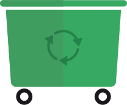

När du sorterat matavfallet transporteras det till en biogas-anläggning. Det kan vara samma bil som hämtar både sopor och matavfall, men de blandas aldrig eftersom det finns två fack i dessa sopbilar.
INNE I BIOGASANLÄGGNINGEN
I biogasanläggningen rötas matavfallet för att det ska bli biogas och gödsel. Rötning innebär att matavfall bryts ner i en miljö utan syre.
Det första som händer med matavfallet är att det krossas och pressas för att sedan delas upp i mindre bitar så att mikroorganismerna kan få fler ytor att mumsa på. Då kan de göra biogas snabbare.
BRUNT SOM CHOKLADPUDDING
Kartong, papper, metall, plast och annat som inte hör hemma i matavfallet sorteras ut. Det brännbara materialet går vidare till en förbränningsanläggning där det omvandlas till värme eller el.
Vätskan tillsätts för att göra matavfallet pumpbart. Det kan vara förpackad mat och dryck från livsmedelsindustrin; juice som det är något fel på eller inte kan säljas för att man tillverkat för mycket. Till skillnad från vatten innehåller mat och dryck energi som kan omvandlas till biogas. Därför vill man helst undvika att tillsätta vatten.
Matavfallet är nu som en gråbrun gröt men lösare i konsistensen. Röran, som kallas slurry, skickas vidare till upphettning och rötning.
UPPHETTNINGEN HINDRAR SJUKDOMAR
Innan slurryn rötas hettas den upp till 70 grader i minst en timme. Det görs för att hindra att organismer som kan sprida sjukdomar förökar sig. Eftersom matavfallet även används som gödsel är detta viktigt. Därefter skickas slurryn till en syrefri rötningstank.
MIKROORGANISMERNA FROSSAR
I rötningstanken bubblar och jäser det. Mikroorganismerna frossar nu i matavfallet och pruttar biogas som innehåller metan. Nästan all energi i maten omvandlas till metan. Mikroorganismerna älskar ättikssyra, vätgas och koldioxid och behöver något av dessa ämnen för att kunna prutta metan.
Temperaturen i rötningstanken måste vara jämn och miljön får inte bli för sur, pH-värdet ska ligga på 7-8, annars kan mikroorganismerna börja må dåligt, bli slöa eller till och med dö. Det tar då längre för biogasen att tillverkas eftersom nya mikroorganismer som gillar det nya läget måste bildas.
BIOGAS OCH RÖTREST
När mikroorganismerna ätit klart och matavfallet brutits ner finns det en massa biogas i tanken, det vill säga metan, koldioxid samt små mängder svavel och kväve. Innan biogasen kan användas som fordonsbränsle måste koldioxiden tvättas bort. Sen kan den transporteras till biogasmacken.
Slurryn som är kvar kallas rötrest. Det är gödsel i flytande form som ser ut som svart vatten – mumma för allt som våra bönder odlar.
GÖDSEL
Slurryn som genomgått rötning innehåller lika mycket näring som matavfallet hade från början. Skillnaden är att kvävet i matavfallet har blivit lättare för växterna att ta upp. Det är bra eftersom övergödningen av våra vatten, som är ett stort miljöproblem, då minskar.
När bonden gödslar sina grödor med rötresten är kretsloppet slutet – maten kan bli ny mat.
FORDONSGAS
Fordonsgas tillverkad av matavfall, som även kallas biometan, är ett av de mest miljövänliga bränslena eftersom det är förnybart och förbränningen inte ökar mängden koldioxid i atmosfären.
Jämfört med bensin och diesel blir utsläppen av partiklar, kolväten och kväveoxider också mycket mindre – vår luft blir renare.
EL & FJÄRRVÄRME
Allt tas till vara vid biogastillverkning av matavfall. De brännbara resterna blir el och fjärrvärme.
Biogasen skulle också kunna användas för produktion av el, värme och kyla. De biogasanläggningar som inte har utrustning för att uppgradera biogas till fordonsbränsle använder energin till annat.
Uppdrag
UPPDRAG 1
VAD ÄR ORGANISKT?
För att göra biogas måste man ha organiskt material som kan brytas ner. Låtsas att du är forskare och gör ett experiment som ska visa vad som är organiskt och kan brytas ner. Visa med en tankekarta hur ditt experiment ser ut. Hur kollar du vad som är organiskt och inte?
Ledtråd: det tar cirka 25 år för ett tuggummi att brytas ner medan en äppelskrutt bryts ner på en månad ungefär.
UPPDRAG 2
VAD GER MEST BIOGAS?
För detta uppdrag behöver du en bit gurka eller äpple, en ostbit och några feta chips. (cirka10 gram).
Skär ut en bit frukt, gurka eller äpple, och en ostbit som väger lika mycket. Väg upp de olika sakerna i handen om du inte har en liten våg hemma. Lägg frukten, osten och chipsen i tre muffinsformar, gärna av aluminium. Du kan använda folie istället för muffinsformar. Sätt ugnen på 105 grader och låt stå så i fem timmar. Använder du större bitar, som ett halvt äpple, kan maten stå i ugnen över natten, upp till 24 timmar.
Väg innehållet i de olika muffinsformarna när de svalnat. Vad har förlorat mest i vikt, gurkan/äpplet, osten eller chipsen? Fundera över vad som hänt i ugnen. Varför väger muffinsformarna inte lika mycket längre? Vilken mat ger mest biogas tror du och varför?
UPPDRAG 3
HUR BLIR MATAVFALLET BIOGAS?
För att mikroorganismerna ska bilda mycket gas vill de ha olika sorters rester. Forskarna har kommit på att potatis och betblast är en bra blandning liksom godisrester och kogödsel. De ger mycket biogas. Vad mer krävs för att mikroorganismerna ska trivas? Gör en tankekarta och visa hur biogas tillverkas – och vad mikroorganismerna gillar och inte gillar.
Bra ord: syre, temperatur, pH.
KÖRA BIL OCH VISPA GRÄDDE PÅ MATAVFALL
Som du förstått kan man göra mycket med den energi som finns i vårt matavfall. Av biogasen kan man göra fordonsgas men även el – som man kan använda för att titta på teve eller baka en kaka med. Och gödslet blir näring till ny mat.
5 KILO MATAVFALL
kan driva en bil en mil
5 KILO GÖDSEL
räcker till drygt en kvadratmeter jord där man skördar vete som blir…
1 KILO MJÖL
efter att man malt ner vetekornen. Mjölet i sin tur, räcker till att baka…
25 FRALLOR

Till och med resterna från matavfallssorteringen ger massor av energi. I en stad med 325 000 invånare kan de ge värme till 850 hus under ett helt år. Och förse…
600 HUS
med hushållsel
OM ALLA I HELA SVERIGE
sorterade sitt matavfall skulle det räcka till att förse
120 000
bilar med biogas
Plus tillräckligt med gödsel för att odla vete till
5 Miljoner bullar
Quiz
DITT BÄSTA RESULTAT
1
2
3
1
2
3
1
2
3
1
2
3
1
2
3
Fråga 1 av 7
Varför finfördelas matavfallet i biogasanläggningen?
För att mikroorganismerna som är väldigt små inte kan äta stora saker.
För att mikroorganismerna ska få fler ytor att jobba med och biogasen ska kunna bildas snabbare.
För att matavfallet kan bilda gas och värme när det är finfördelat.
Du har valt
Fråga 2 av 7
Vilket ämne får inte förekomma i rötningstanken när metanbildarna ska tillverka biogas?
Syre
Vatten
Metan
Du har valt
Fråga 3 av 7
Varför hettas slurryn upp till 70 grader?
För att mikroorganismerna gillar när det är varmt.
För att ta död på organismer som kan sprida sjukdomar.
För att matavfallet ska bli flytande.
Du har valt
Fråga 4 av 7
Var bildas biogas naturligt?
Dra och släpp det eller de svar som du tror rätt i cirkeln, undvik de eller det svar som du inte tror hör hemma där. Råkar du välja fel så klickar du på krysset i listan här nedan.
På bilden:
Sumpmark, ko(mage), kompost och hönsgödsel.
Du har valt
Fråga 5 av 7
När trivs mikroorganismerna bäst?
När temperaturen är jämn.
När det är minst tio grader i tanken.
När pH-värdet i rötningstanken ligger på 1-2.
Du har valt
Fråga 6 av 7
Vad ger mest biogas?
Dra och släpp de 2 matvarorna som du tror är rätt till cirkeln, undvik de eller det svar som du inte tror ger mycket biogas. Råkar du välja fel så klickar du på krysset i listan här nedan.
På bilden:
Smör, tomat, morot, gurka, melon och chips.
Du har valt
Fråga 7 av 7
Om alla i Sverige sorterade sitt matavfall skulle man kunna tillverka biogas för:
10 000 personbilar som kör 1235 mil under ett helt år.
50 000 personbilar som kör 1235 mil under ett helt år.
120 000 personbilar som kör 1235 mil under ett helt år.
Du har valt
Meningsbyggaren
God morgon! Du har just vaknat. Under dagen och kvällen kommer du att påverka vår miljö genom att göra olika val. Ibland utan att tänka på det. Välj det för dig mest sannolika svar på varje fråga och se vilken profil du får!
Det allra första jag gör på morgonen är att ta en dusch. Jag sätter på vattnet…
Efter att jag har gjort mig i ordning är det dags för frukost.
Den här veckan har jag lovat att ta hand om hushållets sopor. Jag brukar…
Sedan är det dags att ta sig till skolan och som vanligt…
Under rasten i skolan äter jag…
Efter en lång dag i skolan kommer jag hem och…
När det är dags att sova…
DIN MILJÖPROFIL
UTFORMA DITT DIPLOM
GRATTIS! (FLYTTA UPP)
Nu har du klarat av alla uppgifter på den här sajten. Vad mycket du har lärt dig! Nu kan du färglägga och skriva ut diplomet.
Varje genomförd uppgift på den här sajten ger dig en medalj. När du är klar med alla uppgifter är ditt diplom fullsmockat med medaljer och du får en underskrift på att du slutfört Smart med mat-kursen.
Har du inte gjort alla uppgifterna gå tillbaka till dem som du missat, så ses vi här igen om en stund. Då kan du färglägga och skriva ut ditt diplom!
Ditt diplom är klart. Skriv ut eller spara det!
Internet Explorer (din webbläsare) stödjer tyvärr inte den teknik som krävs för att skriva ut din presentation direkt i webbläsaren. För att skriva ut bilden, högerklicka och välj 'Spara som...'. Öppna sedan bilden i valfritt program och skriv ut den därifrån.